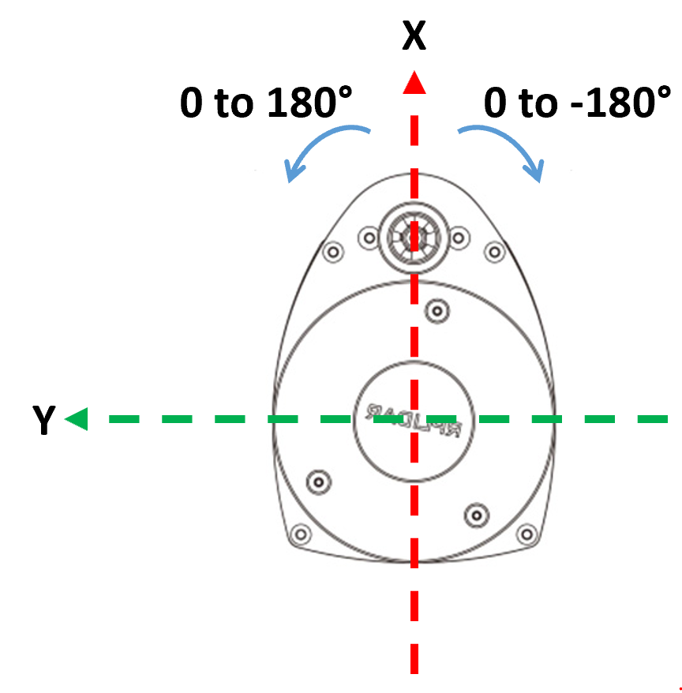
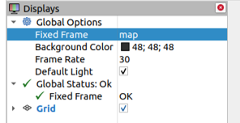
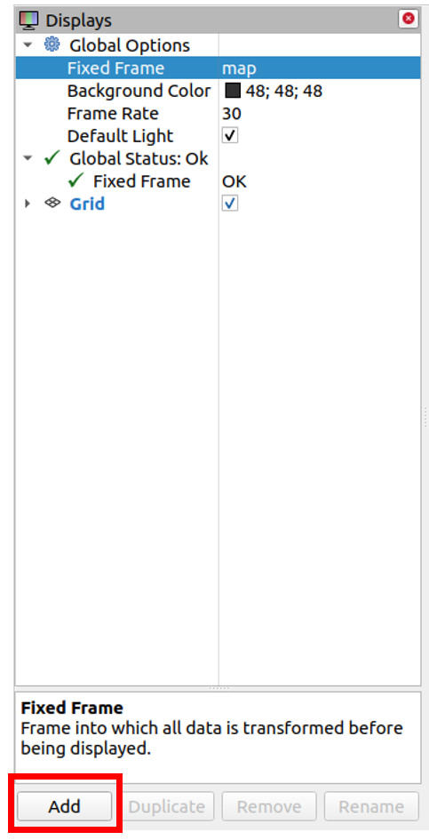
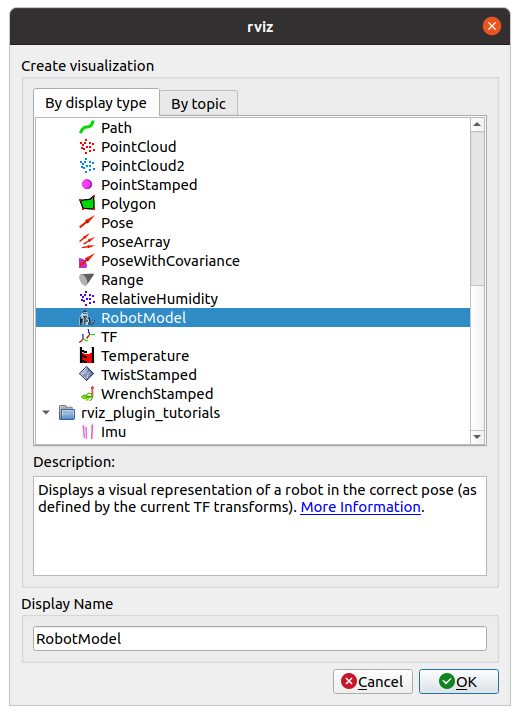
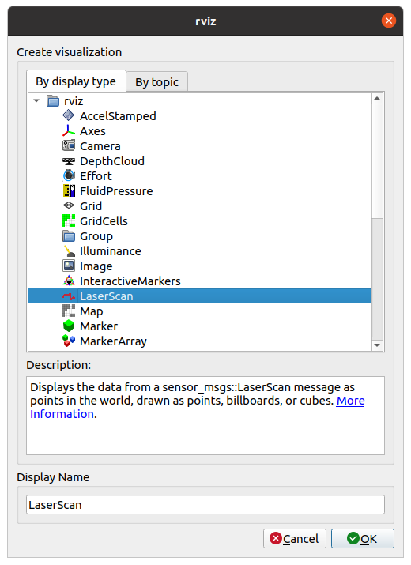
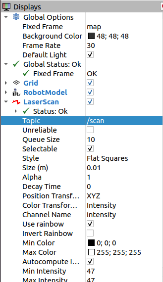

LIDAR
Contents
LIDAR¶
You must open this file as a Jupyter Notebook (link below) to run code
Run this file as an executable Jupyter Notebook
Purpose¶
In this lesson we will enable the robot to avoid obstacles. Many sensors provide obstacle avoidance capabilities: camera, sonar, infrared, LIDAR, etc. All of these will work to enable the robot to avoid obstacles, but we will use LIDAR as it is an affordable, but very capable solution.
LIDAR¶
Slamtec’s RPLIDAR A1 is a 360 deg Laser Range Scanner. It is based on laser triangulation ranging principle and uses high-speed vision acquisition and processing hardware developed by Slamtec. It measures distance data in more than 8000 times per second. It has a detection range of 12 meters and an angular resolution of 1 degree. The distance resolution is 0.2 cm. It has a minimum detection rate of .15 meters.

Setup¶
The RPLIDAR ROS package is pre-installed on your Master and Robot. But as always, trust, but verify. Open a new terminal on your Master and run the following:
rospack find rplidar_ros
If installed, the command should return the absolute path to the package, similar to:
/home/pi/master_ws/src/rplidar_ros
If the command instead returns an error, then you need to install the package. This package has not been compiled for ROS Noetic, so you must download the source code into the workspace source folder. When you install a ROS package from source, you have to manually download any dependencies (using rosdep) and then compile it.
cd ~/master_ws/src
git clone https://github.com/ros-drivers/um7.git
cd ~/master_ws
rosdep install --from-paths src --ignore-src -r -y
catkin_make
source ~/.bashrc
Create an ssh connection to your Robot and repeat the above.
Testing LIDAR¶
Open a new terminal on the master and run roscore and setup for statistics:
roscore
rosparam set enable_statistics true
Select the terminal with the secure shell connection to your Robot and open the robotics.launch file. The launch file already calls the rplidar.launch file, so uncomment the last line in the launch file (remove <!-- and -->above the following so it looks like:
<!-- call the rplidar launch file -->
<include file="$(find usafabot)/launch/include/rplidar.launch"/>
📝️ Note: The
robotics.launchfile also gives us some additional visualization capabilities (remember the Unified Robot Description Format (urdf) file at the top of the launch file? This will provide us a cool USAFABot model in our simulation!)
Run the launch file on the Robot:
roslaunch usafabot robotics.launch
In a new terminal on teh Master, run rviz:
rosrun rviz rviz
This should open a window that we can use to visualize ROS components of our system.
Select the drop down under “Global Options” → “Fixed Frame” and ensure “map” is selected.

Below the “Displays” panel select “Add”.

Select “RobotModel” and click “OK”.

You should now see a model of the USAFABot in the center of your rviz map.
Below the “Displays” panel select “Add”.
Select “LaserScan” and click “OK”.

You should now see a “LaserScan” drop down under the “Displays” panel. Expand it.
Click the empty space to the right of “Topic” and select the “/scan” topic.

You should now see red dots fill the rviz map where obstacles exist. You can increase the size of these using the “Size (m)” setting within the “LaserScan” panel.
In a new terminal on the Master, run the rplidar Node Client toold provided by the rplidar ROS package:
rosrun rplidar_ros rplidarNodeClient
This should provide distance data from objects at specific angle increments. If we kill the rplidarNodeClient node, we can investigate what information the rplidar_ros launch file is sending.
Type the following and observe the command output:
rostopic list
rostopic info /scan
rostopic type /scan
rostopic type /scan | rosmsg show
rostopic echo /scan
At this point you can kill all nodes on the master, but keep the rplidar_ros launch file running on the Robot.
LIDAR Subscriber¶
In this section we will build a subscriber that will print the range data from the RPLIDAR A1 Range Scanner.
Browse to a terminal on the Master and create an
ice8package:cd ~/master_ws/src/ece495_master_spring2022-USERNAME/ catkin_create_pkg ice8 rospy sensor_msgs rplidar_ros geometry_msgs cd ~/master_ws catkin_make source ~/.bashrc
Create an lidar node:
roscd ice8/src touch lidar_sub.py
Copy and complete the below code using the GUI editor tool, Thonny. Browse to the subscriber you just created and double-click. This will open the file in Thonny (if it is open in any other editor, stop, raise your hand, and get help from an instructor)
💡️ Tip: Look for the “TODO” tag which indicates where you should insert your own code.
The code should obtain the list of range data from the LIDAR launch file running on the robot, convert the angles from 0 to 180 degrees and 0 to -180 degrees to 0 to 360 degrees. Lastly, the subscriber will print the average distance of obstacles 30 degrees off the nose of the robot.
#!/usr/bin/env python3
import rospy, math
# TODO: import correct message
# lambda function to convert rad to deg
RAD2DEG = lambda x: ((x)*180./math.pi)
# convert LaserScan degree from -180 - 180 degs to 0 - 360 degs
DEG_CONV = lambda deg: deg + 360 if deg < 0 else deg
class LIDAR:
"""Class to read lidar data from RPLidar A1 using the rplidar_ros pkg"""
def __init__(self):
# TODO: create a subscriber to the scan topic published by the rplidar launch file
self.ctrl_c = False
rospy.on_shutdown(self.shutdownhook)
def callback_lidar(self, scan):
if not self.ctrl_c:
degrees = []
ranges = []
# determine how many scans were taken during rotation
count = int(scan.scan_time / scan.time_increment)
for i in range(count):
# using min angle and incr data determine curr angle,
# convert to degrees, convert to 360 scale
degrees.append(int(DEG_CONV(RAD2DEG(scan.angle_min + scan.angle_increment*i))))
rng = scan.ranges[i]
# ensure range values are valid; set to 0 if not
if rng < scan.range_min or rng > scan.range_max:
ranges.append(0.0)
else:
ranges.append(rng)
# python way to iterate two lists at once!
for deg, rng in zip(degrees, ranges):
# TODO: sum and count the ranges 30 degrees off the nose of the robot
# TODO: ensure you don't divide by 0 and print average off the nose
def shutdownhook(self):
print("Shutting down lidar subscriber")
self.ctrl_c = True
if __name__ == '__main__':
rospy.init_node('lidar_sub')
LIDAR()
rospy.spin()
Save, exit, and make the node executable.
Open a new terminal on the Master and run the lidar_sub.py node.
Rotate the Robot and observe the distance off the nose.
Checkpoint¶
Once complete, get checked off by an instructor showing the output of your lidar_sub and rqt_graph node.
Summary¶
In this lesson you learned how to integrate the LIDAR and get the distance of objects off the nose of the robot using the pre-built rplidar ROS package. In the lab that corresponds to this lesson you will apply this knowledge to stop the robot a specified distance from an obstacle and turn.
Cleanup¶
In each terminal window, close the node by typing ctrl+c. Exit any SSH connections. Shutdown the notebook server by typing ctrl+c within the terminal you ran jupyter-notebook in. Select ‘y’.
Ensure roscore is terminated before moving on to the lab.
Lab 3: LIDAR¶
You must open this file as a Jupyter Notebook (link below) to run code
Run this file as an executable Jupyter Notebook
Purpose¶
This lab will integrate the Slamtec RPLIDAR A1 Range Scanner with the existing USAFABot controller to drive the robot forward and turn 90 degrees when there is an obstacle.
Master¶
Setup:¶
In the /master_ws/src/ece495_master_spring2022-USERNAME/ folder, create a lab3 package which depends on rospy, std_msgs, geometry_msgs, um7, rplidar_ros, and usafabot.
Make and source your workspace.
controller.py¶
Copy the controller.py file from lab2 into the lab3 package.
Open the controller.py file from lab3 using the Thonny editor.
Import the laser message used in ICE8.
Remove the import of the um7.srv library (we will no longer be initializing the IMU within the controller.py file, because it is initialized in the robotics.launch file).
Copy the 2 lambda functions from ICE8 (RAD2DEG & DEG_CONV).
Add the following Class variables within the class above the
__init__()function:DISTANCE = 0.4 # distance from the wall to stopK_POS = 100 # proportional constant for slowly stopping as you get closer to the wallMIN_LIN_X = 0.05 # limit m/s values sent to USAFABotMAX_LIN_X = 0.2 # limit m/s values sent to USAFABot
Add the following to the
__init__()function:Instance variable,
self.avg_dist, initialized to 0 to store the average dist off the nose.Instance variable,
self.got_avg, initialized to False to store when an average is calculated.A subscriber to the LIDAR topic of interest with a callback to the callback_lidar() function.
Remove the call to
self.init_imu()from the__init__()function. The IMU is initialized within the robotics.launch file.Remove the
init_imu()function.Add the
callback_lidar()function from ICE8, removing print statements and setting the instance variables,self.avg_distandself.got_avg.Edit the
callback_controller()to accomplish the following:Remove user input.
When not turning and you have an average LIDAR reading, calculate the distance error (
actual dist-desired dist) and use that to drive your robot straight at a proportional rate (very similar to how we calculated the turn rate in lab 2).Limit the linear speed of the robot to
MIN_LIN_XandMAX_LIN_X.If within
DISTANCEof a wall, then stop and start turning (left or right, you decide).
💡️ Tip: You should be able to reuse a lot of code for this step!
Save the linear x and angular z values to the
USAFABOT_Cmdmessage and publish.
Save, exit, and make executable if necessary.
Launch File¶
Create a launch file on the Master, lab3.launch, that launches the controller.py file.
Run your nodes¶
Open secure shell into the Robot and run the robotics.launch file.
On the Master, open a terminal and run your lab3.launch file.
Report¶
Complete a short 2-3 page report that utilizes the format and answers the questions within the report template. The report template and an example report can be found within the Team under Resources/Lab Template.
📝️ NOTE: We will be primarily grading sections 3.3 System level design and 3.4 Testing for this lab, but do include the entire lab as you will need other components for the final project report.
Turn-in Requirements¶
[25 points] Demonstration of keyboard control of USAFABot (preferably in person, but can be recorded and posted to Teams under the Lab1 channel).
[50 points] Report via Gradescope.
[25 points] Code: push your code to your repository. Also, include a screen shot of the controller.py file at the end of your report.